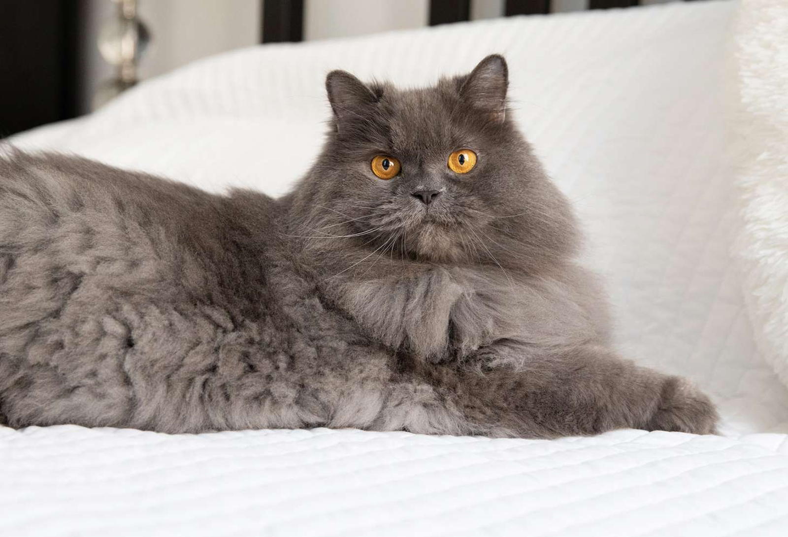

| PHOTO |
BREED |
DESCRIPTION |
|
Labrador |
The Labrador Retriever is characteristically rugged, even-tempered, and gentle. This certain breed has been used in military work, as a rescue dog, and as a guide dog for people with disabilities.
|
|
Shih Tzu |
alittle dog standing about 10 inches tall. Its thick coat, which may be different types of colours, covers its eyes and forms a beardthe face.
|
|
Corgi |
The Pembroke Welsh corgi,is descended from dogs brought to Wales by Flemish weavers. Many people enjoy its build, the short legts and fur colors. And the Queen of England, had corgis for a long time. |
|
Border Collie |
A border collie is known for its work near the fields, especially herding animals like sheep. The Border Collie is considered to be among the smartest dog breed, and it stands out in agility competitions |
|
Chihuahua |
The Chihuahua dog is know for its small size, and large eyes. It is also well-known around social media for its "agressive" personality. |
|
Husky |
The Husky dog is know for its nlavk and white fur coat. Husky dogs are also well-known for its loud cires or barks. |
|
Husky |
The Husky dog is know for its nlavk and white fur coat. Husky dogs are also well-known for its loud cires or barks. |
|
Taby Cat |
With its mix of orange fur, Taby cats are almost seeneverywhere here in the philippines as stray cats. Another funfact, taby cats are one of the most smartest cat breeds. |
 |
Calico Cat |
The Calico Cat is also another well known cat here in the philippines because of how many street cats there are. With their Black, white, and organge fur, they love to have a spunky assertive personallity |
|  |
Persian Cat |
Persian cats have long fluffy hair with down drooped mouth. A funfact about persian cats, Queen victoria had a few persian cats. |